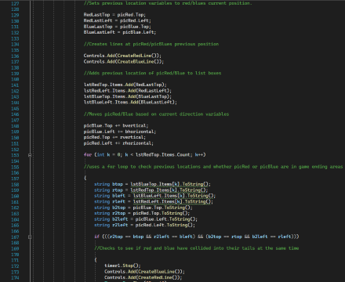
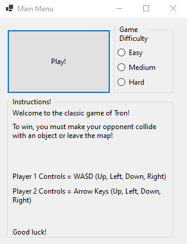
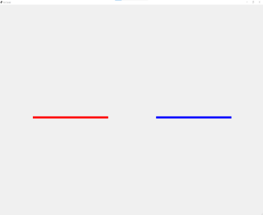
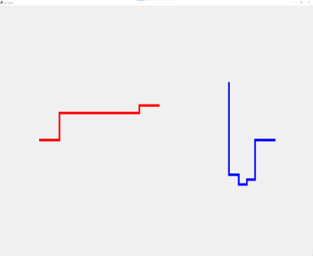

- My Projects
- Tron Game




- This was the final project for my programming class from my first C# semester.
This game project allowed me to practice all of the fundamentals of programming before arrays get involved.
- What Did I Learn from this Project?
-
- Forms and Controls via GUI and Code
- Labels
- Buttons
- PictureBox Controls
- Comments
- Debugging
- Processing Data
- Variables and Constants
- Formatting Data Types
- Try and Catch
- Using .Math()
- Making Decisions
- if-else Statements
- Bool Variables
- Converting Data with Parse and TryParse
- The Switch Statement
- Loops, Files and Random Numbers
- Loops (for, while and do-while)
- Increments ++ and --
- OpenFileDialog
- StreamReader and StreamWriter
- Modulating Code with Methods
- void
- ref Types
- Value Returning Methods
- This Website
- This website has gone through many iterations as I constantly strived to improve the design.